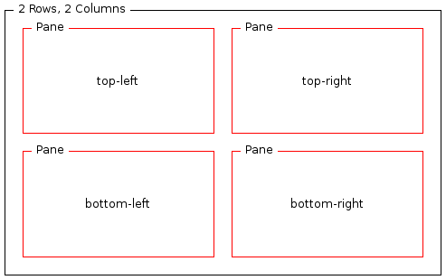
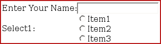

In this module we will explain how to use layouts to control the position of form elements and their labels on a page. We will start by creating a new layout policy. Then you will learn how to target XDIME 2 content to different layout elements. Refer to Next steps with MCS for further information about using layouts.
Tip: The MCS policy editors operate within the open-source Eclipse Framework. See for details.
The Layout Editor has two pages, an Overview page listing the device layouts and their general attributes, and a Design page where you can develop your layout.

<xf:input model="demoAlign" ref="input" style="mcs-container: 'top-right'">
<xf:label style="mcs-container: 'top-left'">Enter Your Name:</xf:label>
</xf:input>
<xf:select1 model="demoAlign" ref="select1"
style="mcs-selection-list-style: controls;
mcs-selection-list-option-layout: control-first; mcs-container: 'bottom-right'">
<xf:label style="mcs-container: 'bottom-left'">Select1:</xf:label>
<xf:item>
<xf:label>Item1</xf:label>
<xf:value>Item1</xf:value>
</xf:item>
<xf:item>
<xf:label>Item2</xf:label>
<xf:value>Item2</xf:value>
</xf:item>
<xf:item>
<xf:label>Item3</xf:label>
<xf:value>Item3</xf:value>
</xf:item>
</xf:select1>

<?xml version="1.0" encoding="UTF-8"?>
<html xmlns="http://www.w3.org/2002/06/xhtml2"
xmlns:mcs="http://www.volantis.com/xmlns/2006/01/xdime/mcs"
xmlns:si="http://www.volantis.com/xmlns/2006/01/xdime2/si"
xmlns:xf="http://www.w3.org/2002/xforms">
<head>
<title>Aligning Form Controls</title>
<link rel="mcs:layout" href="/form.mlyt"/>
<xf:model id="demoAlign">
<xf:instance>
<si:instance>
<si:item name="input"/>
<si:item name="select1"/>
</si:instance>
</xf:instance>
</xf:model>
</head>
<body>
<xf:input model="demoAlign" ref="input" style="mcs-container: 'top-right'">
<xf:label style="mcs-container: 'top-left'">Enter Your Name:</xf:label>
</xf:input>
<xf:select1 model="demoAlign" ref="select1"
style="mcs-selection-list-style: controls;
mcs-selection-list-option-layout: control-first; mcs-container: 'bottom-right'">
<xf:label style="mcs-container: 'bottom-left'">Select1:</xf:label>
<xf:item>
<xf:label>Item1</xf:label>
<xf:value>Item1</xf:value>
</xf:item>
<xf:item>
<xf:label>Item2</xf:label>
<xf:value>Item2</xf:value>
</xf:item>
<xf:item>
<xf:label>Item3</xf:label>
<xf:value>Item3</xf:value>
</xf:item>
</xf:select1>
</body>
</html>
| Name | Purpose |
|---|---|
| si:instance | Container for data items used to supply initial values for forms controls, or to provide additional data to be submitted with the form. |
| si:item | Defines an item of instance data that is required if a form control needs to be initialized, or when data not associated with a form control needs to be provided during form submission. |
| xf:input | A form control for text input. |
| xf:instance | Optional element that contains instance data associated with the model element. It is used to supply initial values for forms controls, or to provide additional data to be submitted with the form. |
| xf:label | Provides a descriptive label for forms controls. |
| xf:model | Represents a form definition, used as a container for elements associated with its submission. |
| xf:select1 | A form control that provides for selection of a single choice from an available list of options; for example, a group of radio buttons. |
| Form attributes | Binding expressions provide the mapping between the data associated with a particular control and the data provided for processing when the form is submitted. The expression is the name of the parameter associated with the control's data when the form is submitted. These parameters appear on the submission URL if the form is submitted using the HTTP GET method, and are hidden if the POST method is used. The methods are specified as attributes on the xf:submission element. |